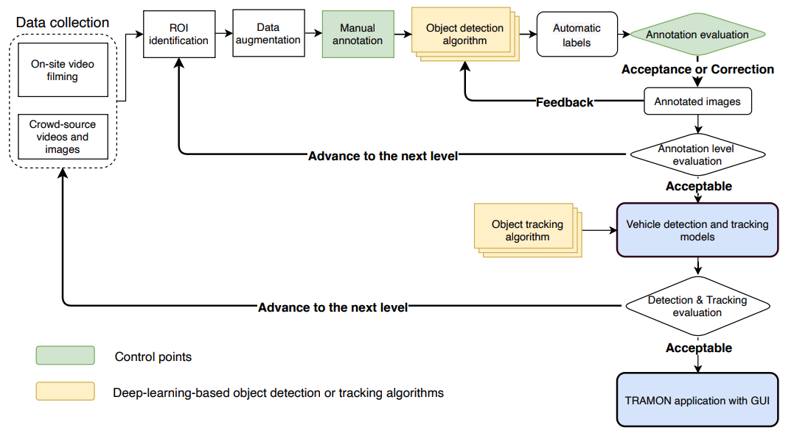
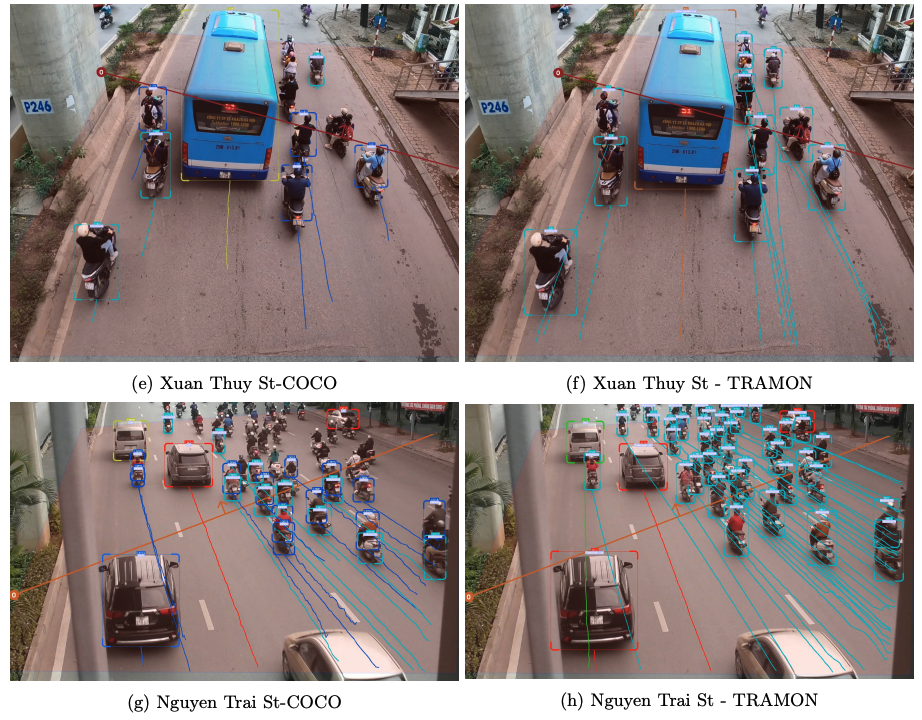

AI and computer vision in traffic data collection and monitoring
Minh Kieu
Lecturer
University of Auckland
These slides:
https://leminhkieu.github.io/p/MK-computer-vision.html
Traffic monitoring and traffic data collection
Can support decision making during civil emergencies.
Can feed into traffic models.
What are the current techniques and their issues?.
Traffic flows monitoring: With human suveryors
Costly and inefficient.

Traffic flows monitoring: With road tubes
Imagine doing this on our 5-lanes motorways!
Traffic flows monitoring: With loop detectors
Very high cost for maintenance

Traffic flows monitoring: With mobile phone data

Huge volume of detailed data but has privacy concerns or coarse resolution
Traffic flows monitoring: Using computer vision

Object detection algorithm YOLO: You only look once

State-of-the-art object detection algorithm
Annotated image dataset: Microsoft COCO

84 different objects, but not specialised in transportation
Standard YOLO object detection
Research challenge:
How can be specialise computer vision for traffic monitoring?
Traffic vehicle objects
Actual locations of those objects on a real-world dataset
Acknowledgement
Dr Tan Dang, Hanoi University of Transport and Communications, Vietnam
Daria Solovyeva, University of Auckland
1st challenge: How can we make AI-based traffic monitoring practical?
Efficient (e.g. real-time monitoring)
Accurate
Economical
Versatile
Our case study is in Hanoi, Vietnam
Much higher traffic density
Many unknown classes of vehicles
Lane-free traffic
We believe that if we can do Vietnam, we can do New Zealand, too!
If we use existing computer vision packages for the traffic in Vietnam...
TRAMON: a real-time traffic monitoring system
To improve object detection performance, we use:
- state-of-the-art algorithms and databases: Yolov5, Ms COCO and DeepSORT
- a 3-levels iterative system
- a semi-automatic method for image annotation
Key elements from our traffic videos
Left: existing algorithms, Right: our proposed TRAMON system
Left: existing algorithms, Right: our proposed TRAMON system

TRAMON performance
TRAMON application on the CCTV footage at SH16
2nd challenge: Locate the actual coordinates of vehicles
Our cameras are all 2D-cameras
Larger objects vs closer objects
Identify the bottom plane for each vehicle
3D bounding box, instead of 2D
Existing 3D bounding box method for actual coordinates estimation

Generally limited to completely straight section
Or limited to sections where we can measure every details!
Introduce Tramon3D

Key idea: We use a vector of motion to identify the vehicle heading direction, and then use that to draw a 3d bounding box
Now with the vehicle 3d bounding box developed, we only need to compare its location to a set of 4 control points

Tramon3D on CCTV cameras
More accurate and cheaper than any other methods
Provides estimation of traffic flow, speed and density
https://www.youtube.com/watch?v=8IJcoYMlR4YExtension to pedestrian systems
AI and computer vision in traffic data collection and monitoring
Thank you!
Questions?
These slides:
https://leminhkieu.github.io/p/MK-computer-vision.html